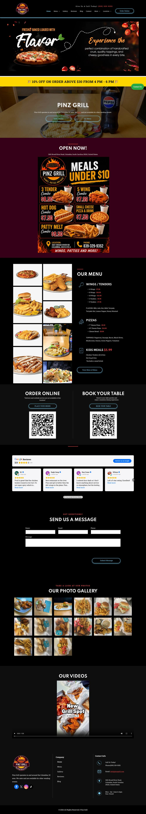
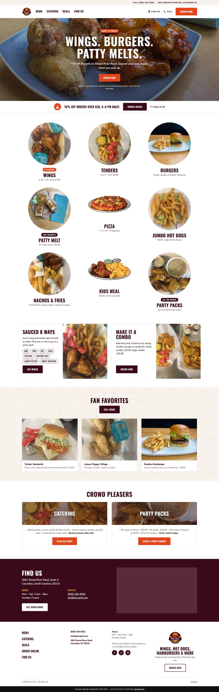

The current site next to the proposed redesign. Scroll inside each panel. The concept follows the layout pattern of national fast-casual brands: one clear order button, the menu above the fold, and everything reachable in one tap on a phone.
Open the Concept Open the Current Site
